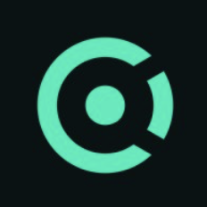

Rapport d’activité professionnelle · Bachelor 2 Cybersécurité
SamiEl Abdallaoui
Deux mois en télétravail chez OpenCyberAI, dans une jeune entreprise qui fonctionne à la confiance et laisse une large autonomie. J’y ai construit mon propre programme de travail et livré quinze documents.
- Entreprise
- OpenCyberAI
- Localisation
- Strasbourg (Grand Est), stage réalisé intégralement à distance
- Secteur
- EdTech et cybersécurité : plateforme de simulation gamifiée assistée par IA
- Durée
- Du 1er juin au 31 juillet 2026, soit 2 mois, environ 44 jours ouvrés
- Poste occupé
- Stagiaire en veille technologique et contenus pédagogiques
- Productions
- 5 fiches de veille, 4 fiches de cours Python, 6 scénarios pédagogiques
- Tuteur entreprise
- Armand Taheri
- Formation
- Bachelor 2 Cybersécurité, Ynov Campus Val d’Europe
Remerciements
Un stage mené en autonomie complète suppose d’abord que quelqu’un ait accepté d’accorder cette autonomie.
Je tiens à remercier Armand Taheri, fondateur et directeur général d’OpenCyberAI, qui m’a accueilli en stage et en a assuré le tutorat. Diriger une entreprise et encadrer un stagiaire de deuxième année sont deux charges distinctes : il a assumé la seconde sans jamais me renvoyer à la première.
Je lui suis reconnaissant de trois choses en particulier. De m’avoir donné un accès complet à la plateforme dès le premier jour, ce qui m’a permis de travailler sur le produit réel plutôt que sur une version d’essai. De m’avoir laissé choisir mes sujets de veille et défendre mes propositions de contenus, au lieu de me confier une liste de tâches déjà cadrées. Et d’avoir lu ce que je lui envoyais, ce qui, dans une structure de cette taille, se prend sur un temps qu’il n’avait pas.
C’est aussi ce que j’en retiens de plus utile pour la suite : on ne progresse pas de la même manière selon qu’on exécute une consigne ou qu’on porte un périmètre. Ce stage m’a placé du second côté, et c’est un choix qui revenait à mon tuteur.
Je remercie également l’équipe technique et pédagogique d’OpenCyberAI, dont le canal interne m’a donné le contexte produit et le vocabulaire de l’entreprise, ainsi que l’équipe pédagogique d’Ynov Campus Val d’Europe pour le suivi assuré pendant toute la période de stage.
L’entreprise et son marché
Une petite structure qui s’attaque à un problème simple à énoncer : la cybersécurité s’enseigne mal parce qu’elle s’enseigne à plat.
Ce que fait OpenCyberAI
OpenCyberAI développe une plateforme de formation immersive à la cybersécurité. Le principe n’est pas de proposer des cours suivis d’exercices, mais des simulations jouables : l’apprenant est placé dans une architecture informatique virtuelle et doit la protéger ou l’exploiter, avec des objectifs à atteindre, des ressources à gagner et une progression chiffrée.
La particularité du produit est son assistant intégré. Un mentor conversationnel accompagne le joueur pendant la partie, analyse ce qu’il fait et lui donne des orientations en temps réel. C’est ce qui distingue la plateforme d’un environnement de challenge classique, où l’apprenant reste seul face à l’énoncé. Un mode multijoueur permet également de faire s’affronter plusieurs participants.
Sur le plan juridique, l’activité est portée en France par la société CyberAI France, basée à Strasbourg, détenue par une structure de tête britannique, et dirigée par Armand Taheri, fondateur du projet. L’équipe est réduite, ce qui a une conséquence directe sur le stage : les périmètres sont larges, et un stagiaire touche à la fois au test, à la correction et à la rédaction de contenu. C’est aussi ce qui explique le format distanciel, puisque l’équipe est distribuée et que l’essentiel de la coordination passe déjà par l’écrit.
La structure du catalogue
Le contenu est organisé en deux niveaux. Les chapitres couvrent un domaine (fondamentaux de la cybersécurité, familles d’attaques, sécurité des applications web, ingénierie sociale, rançongiciels, responsabilité sociétale) et regroupent de deux à treize leçons chacun. Les cours, plus courts, traitent un sujet précis : introduction à la cryptographie, analyse de maliciels, introduction à Python, réponse à une attaque par rançongiciel. Chaque entrée affiche un nombre de leçons, une difficulté et une progression.
Le catalogue est bilingue et la répartition n’est pas neutre : les contenus les plus récents et les plus longs sont en anglais, les parcours d’entrée en français. C’est une conséquence directe du double marché, et c’est aussi ce qui m’a conduit à travailler une partie de mes sources de veille en anglais.
Le catalogue conserve par ailleurs la trace des opérations événementielles : un chapitre est consacré au marathon cyber mené avec un grand opérateur télécom à VivaTech en 2024, conçu pour démystifier les fondamentaux auprès du grand public.
Le marché et le positionnement
Contrairement à ce que laisse penser l’aspect ludique du produit, l’entreprise ne vend pas à des particuliers. Son modèle est double, et les deux volets s’adressent à des organisations.
- Le volet académique. Écoles d’ingénieurs, universités et bootcamps, à qui l’entreprise fournit des modules pédagogiques alignés sur des référentiels du secteur : le cadre du NIST et la matrice MITRE ATT&CK. Cet alignement est l’argument commercial central, puisqu’un établissement peut justifier que son enseignement couvre un référentiel reconnu.
- Le volet entreprise. Des simulations sur mesure destinées à entraîner des équipes déjà en poste (centres de supervision, tests d’intrusion, gouvernance), avec un accent mis sur la gestion de crise.
Un troisième canal est venu s’ajouter aux deux premiers pendant que je faisais mes recherches, et c’est celui qui m’a le plus surpris : l’Éducation nationale. La plateforme a été référencée en octobre 2025 dans le dispositif Édu-Up, qui soutient la production de ressources numériques pour l’école, elle figure au catalogue 2026 d’un distributeur de ressources scolaires, et l’académie d’Aix-Marseille a publié des cas d’usage en classe. Le second degré n’est donc pas un marché théorique.
Reconnaissance et diffusion
Pour une structure de cette taille, la surface institutionnelle est notable, et elle explique une partie de l’exigence de qualité sur le produit.
- Institutionnel. Référencement dans le dispositif Édu-Up du ministère de l’Éducation nationale, présence au catalogue d’un distributeur de ressources scolaires, usages documentés par l’académie d’Aix-Marseille.
- Académique. Partenariats avec la 3W Academy et l’université d’Amsterdam ; le centre de recherche en cybersécurité du RMIT a cité une collaboration dans ses travaux sur l’apprentissage gamifié.
- Écosystème startup. Sélection dans la cohorte « AI for Education » de Google for Startups en janvier 2025, parmi vingt et une entreprises ; demi-finaliste d’un concours à Malte ; membre de l’initiative CyberFirst du NCSC britannique.
- Événementiel. Organisation d’un marathon cyber à VivaTech avec un grand opérateur télécom.
Cette exposition change la nature du travail de contenu. Une imprécision dans un module référencé par le ministère et joué en classe ne se corrige pas discrètement : elle a été lue par un enseignant devant ses élèves avant d’arriver jusqu’à l’équipe.
La concurrence
Quatre familles d’acteurs occupent le terrain, et aucune ne se place exactement là où l’entreprise se situe.
- Les plateformes de challenges. Root-Me, TryHackMe, Hack The Box. Techniquement excellentes, mais conçues pour des pratiquants autonomes qui savent déjà où ils vont. Pas d’accompagnement pendant l’exercice, peu de progression structurée, et un coût d’entrée qui décourage un débutant.
- Les plateformes de cours généralistes. OpenClassrooms, France-IOI. Solides sur la programmation, faiblement gamifiées et peu orientées sécurité.
- L’offre institutionnelle. SecNumAcadémie de l’ANSSI, CyberEdu. Gratuite et fiable, mais tournée vers la sensibilisation générale, sans mise en situation ni évaluation exploitable par un établissement.
- Les acteurs anglophones. Mieux financés, mais désalignés des programmes français et des attentes d’un établissement européen.
Le créneau visé est donc l’intersection de trois exigences rarement réunies : une mise en situation réelle, un accompagnement pendant la partie, et un adossement à un référentiel qui permette à un établissement ou à une entreprise de justifier la formation dispensée.
Ce que cette position implique au quotidien
Un produit vendu à des établissements n’a pas droit aux mêmes défauts qu’une application grand public. Un bug qui bloque une étape ne coûte pas un abandon : il coûte la crédibilité du contenu devant une classe entière, il se remonte à l’enseignant, qui le remonte au fournisseur. Une incohérence entre un énoncé et l’exercice n’est pas un détail cosmétique, c’est un contresens pédagogique dans un module censé couvrir un référentiel reconnu.
C’est précisément ce qui donne son poids au travail de veille et de rédaction pédagogique, et c’est ce qui a structuré la plus grande partie de mon stage.
Les éléments de positionnement, de clientèle, de structure et de reconnaissance proviennent des supports publics de l’entreprise, de ses références citées publiquement et des registres légaux. L’analyse concurrentielle et la lecture du marché sont personnelles et n’engagent pas OpenCyberAI.
Mon rôle et mes missions
Un poste volontairement large, dans une structure qui fonctionne à la confiance : à moi de définir le programme, de le tenir et de le livrer.
Le cadrage initial était classique pour un stage de deuxième année : prendre en main la plateforme, contribuer à ses contenus, assurer une veille sur la sécurité. Dans une structure de dix personnes qui vend à des ministères et à des universités, les périmètres sont larges et la marge d’initiative est réelle : on attend d’un stagiaire qu’il identifie lui-même là où il peut être utile.
Mon tuteur dirige l’entreprise, et ce rattachement direct au fondateur est un privilège rare pour un stage de deuxième année : mes propositions arrivaient sans intermédiaire à la personne qui arbitre les priorités produit. Le fonctionnement était asynchrone et fondé sur la confiance. Concrètement : un accès complet à la plateforme, un canal de discussion ouvert en permanence, et la liberté de construire mon plan de travail.
La ligne directrice que je me suis fixée
Deux mois d’autonomie posent une question simple : sur quoi travailler pour que le travail serve réellement à l’entreprise. J’ai choisi de partir du produit lui-même, en parcourant le catalogue, en mesurant ce qu’il couvrait déjà et en repérant ses angles morts, plutôt que d’attendre une liste de tâches.
C’est la partie du stage dont je tire le plus. Tout ce qui suit (la veille, les fiches de cours, les scénarios) relève d’un programme que j’ai conçu, défendu et tenu jusqu’au dernier jour.
Prise en main de la plateforme
Découverte produit · Cartographie du catalogue
Première étape, et la condition de tout le reste : comprendre ce que vend l’entreprise. J’ai parcouru le module Tronc Commun, sécurité réseau et automatisation défensive, le parcours d’entrée du catalogue francophone, puis exploré l’ensemble de l’offre.
- Parcours du Tronc Commun et de ses sept leçons : empoisonnement DNS, interception d’identifiants sur le réseau interne, sécurisation d’une messagerie exposée, puis mise en pratique Python d’automatisation défensive.
- Lecture de la structure du catalogue : des chapitres de deux à treize leçons couvrant un domaine, des cours plus courts sur un sujet précis, une difficulté et une progression affichées pour chaque entrée.
- Repérage de la répartition linguistique (contenus longs en anglais, parcours d’entrée en français) et de ce qu’elle dit du double marché de l’entreprise.
- Identification des domaines absents du catalogue francophone : administration réseau, traçabilité, chaîne de confiance des certificats.
Ce travail de cartographie a conditionné tout le reste : sans savoir précisément ce que la plateforme couvrait déjà, aucune proposition n’aurait eu de valeur. C’est en le menant que sont apparus les deux manques sur lesquels j’ai ensuite travaillé.
Veille technologique
Le cœur de mon activité · 5 fiches produites
C’est là que j’ai passé le plus de temps, et c’est le volet où l’autonomie a le mieux servi : j’ai choisi moi-même les sujets, en partant à chaque fois d’une question concrète pour la plateforme plutôt que de l’actualité du moment.
Cinq fiches, chacune reliée à une question concrète pour la plateforme. Le détail de la méthode et les documents sont dans la section suivante.
Propositions de contenus
Initiative personnelle · 4 fiches de cours, 6 scénarios
La veille produisait des constats ; encore fallait-il les transformer en quelque chose d’utilisable. J’ai donc rédigé deux dossiers de propositions, en visant précisément les manques que ma phase de découverte avait fait apparaître.
- Quatre fiches de cours Python portant sur les boucles, les listes, les dictionnaires et la lecture d’un fichier de journal, pour combler l’écart entre le cours d’introduction en trois leçons et la partie automatisation défensive du Tronc Commun.
- Six scénarios réseau et protocoles consacrés à SNMP, NTP, RDP, SMB, DHCP et aux certificats TLS, c’est-à-dire aux domaines que le catalogue francophone ne couvrait pas.
Ces documents sont des propositions remises à l’entreprise, et non des contenus déjà intégrés à la plateforme. Je les présente pour ce qu’ils sont : un travail de fond, mené de bout en bout et directement exploitable, sur des manques que j’ai identifiés, documentés et traités.
Outils techniques de la spécialisation
Un poste entièrement logiciel et entièrement à distance. Ces outils sont ceux avec lesquels j’ai produit et vérifié.
- Python 3
- Visual Studio Code
- Markdown
- Plateforme OpenCyberAI
- Navigateur en session privée (condition de test documentée)
- Sources primaires ANSSI et NIST
- Documentation officielle Python (module
site) - Windows 11
Coordination et suivi
- Notion
- Trello
- Discord
- Courriel
Contenus pédagogiques
La difficulté d’une fiche de cours n’est pas technique. Elle est de résister à la tentation de tout dire.
Le catalogue comporte un cours « Introduction au Python » en trois leçons, qui pose les bases. Le module dont j’avais la charge se termine, lui, par une mise en pratique d’automatisation défensive, c’est-à-dire par du code appliqué à un cas réseau. Entre les deux, il manquait les notions intermédiaires. J’ai rédigé quatre fiches pour combler cet écart, calibrées pour un public débutant de niveau NSI, BTS SIO ou première année d’école. Le choix que j’ai défendu, et qui a structuré tout le dossier, est de ne pas les écrire comme des fiches indépendantes. Une notion isolée s’oublie ; une notion qui sert à la suivante se retient.
Les quatre fiches forment donc une progression. Les boucles permettent de parcourir, les listes fournissent ce qu’on parcourt, les dictionnaires font passer de « quels éléments » à « combien de fois », et la dernière fiche réunit les trois sur une donnée réelle : un fichier de journal d’authentification, analysé en une vingtaine de lignes. L’élève qui arrive au bout a écrit un outil, pas fait un exercice, et il est prêt pour la partie automatisation défensive du Tronc Commun.
Les partis pris de rédaction
- Ouvrir sur le problème, pas sur la définition. Chaque fiche commence par une situation où la notion manque cruellement. La définition arrive après, comme réponse.
- Des exemples ancrés en cybersécurité. Compter des tentatives de connexion par adresse IP enseigne exactement le même dictionnaire que compter des fruits dans un panier, mais donne une raison de s’y intéresser.
- Une rubrique « erreurs fréquentes » systématique. Ce qui bloque un débutant, ce n’est presque jamais la notion : c’est le saut de ligne oublié, la borne exclue de
range, la liste modifiée pendant qu’on la parcourt. - Signaler les simplifications. Manipuler des mots de passe en clair rend une boucle lisible, mais ce n’est pas un modèle. Je le précise dans la fiche plutôt que de laisser passer un mauvais réflexe.
Ce que la vulgarisation m’a coûté, et appris
Je croyais que la partie difficile serait d’expliquer les dictionnaires. C’était de choisir quoi ne pas mettre. Ma première version de la fiche sur les listes couvrait le découpage, la copie, les listes de listes, les compréhensions et le tri. Tout était juste, et l’ensemble était illisible pour quelqu’un qui découvre. J’ai supprimé la moitié.
C’est le même réflexe qu’a demandé la veille : écrire pour un lecteur qui n’a pas lu les mêmes sources que moi, et non pour prouver que je les ai lues. Les deux exercices ont fini par converger sur la même exigence.
Conception de scénarios
Écrire un scénario, c’est chercher la situation dans laquelle une notion abstraite devient une contrainte que le joueur doit lever lui-même.
Les scénarios du Tronc Commun portent tous sur l’interception de protocoles applicatifs : empoisonnement DNS, identifiants captés sur le réseau interne, messagerie non chiffrée. C’est un angle solide, et cohérent pour un parcours d’entrée. Mais en le parcourant, puis en passant en revue le reste du catalogue francophone, j’ai vu ce qu’il laissait de côté : l’administration du réseau, la traçabilité, et la chaîne de confiance des certificats.
J’ai donc rédigé, de ma propre initiative, un dossier de six situations complémentaires. Aucune ne met en scène un attaquant abstrait : chacune part d’une négligence ordinaire, du type qu’un élève peut reconnaître dans son propre établissement. Une supervision installée il y a six ans que personne n’a rouverte. Un port d’administration ouvert « le temps que ça se calme », deux ans plus tôt. Un avertissement de certificat que deux cents personnes cliquent chaque matin sans le lire.
Les principes que je me suis fixés
- Faire constater avant d’expliquer. La théorie arrive après la démonstration, jamais avant. Un élève à qui l’on dit qu’un protocole est dangereux le note ; un élève qui voit ce qu’on en tire le retient.
- Une seule notion centrale par scénario, et des notions secondaires qui s’y rattachent naturellement. Un scénario qui enseigne quatre choses n’en enseigne aucune.
- Partir d’une négligence plausible plutôt que d’un scénario d’attaque spectaculaire. La faille la plus courante n’est pas une prouesse technique, c’est un raccourci pris un jour d’urgence et jamais repris.
- Terminer par une remédiation vérifiable, pas par un questionnaire. Le joueur doit corriger, puis constater que la correction tient.
Ce que la conception m’a appris
Définir soi-même les critères de validation d’un exercice change le regard qu’on porte sur ceux des autres. On voit ce qui manque : une étape sans condition de sortie claire, un énoncé qui laisse deux interprétations possibles, une question d’examen qui porte sur une notion à peine effleurée dans le contenu.
C’est aussi l’exercice qui m’a demandé le plus de travail technique. Écrire un scénario crédible sur SNMP ou sur le DHCP suppose de comprendre le protocole assez bien pour savoir ce qu’un attaquant peut réellement en faire, et pas seulement pour en réciter la définition.
Veille technologique
Un volet du stage à part entière, et celui que j’ai le plus choisi : suivre l’actualité de la sécurité, puis en tirer ce qui devait changer dans nos contenus.
Une plateforme qui enseigne la cybersécurité vieillit vite. Un module qui présentait RSA comme une solution durable ou qui apprenait à repérer un courriel frauduleux à ses fautes d’orthographe n’est pas seulement daté : il transmet un réflexe faux. La veille n’était donc pas un exercice scolaire posé à côté du travail, elle en était une entrée.
Ma méthode
- Suivi régulier de sources primaires en priorité (publications de l’ANSSI, standards du NIST, rapports d’éditeurs de sécurité) plutôt que d’agrégateurs.
- Recoupement systématique de toute information marquante sur au moins trois sources indépendantes avant de la retenir.
- Distinction explicite, dans chaque fiche, entre le fait technique vérifiable et le chiffre communiqué par un acteur commercialement intéressé.
- Restitution sous un format fixe : contexte, points à retenir, explication technique, puis conséquences concrètes pour nos contenus.
Ce dernier point est celui auquel je tiens le plus. Une veille qui s’arrête au résumé d’actualité ne sert à personne. Chaque fiche se termine donc par ce qu’il faudrait modifier, ajouter ou corriger sur la plateforme.
Cinq fiches ont été produites sur la durée du stage. L’une d’elles a d’ailleurs modifié ma façon de travailler plutôt que nos contenus : en étudiant les extensions de navigateur, j’ai compris qu’une extension capable d’injecter du script dans une page pouvait produire une anomalie qui n’existe pas dans le produit. C’est ce qui a transformé la navigation privée, que j’utilisais par réflexe, en condition de test explicitement documentée dans mes rapports.
L’ANSSI ferme la porte au chiffrement non post-quantique
L’annonce du 16 juin 2026 transforme une recommandation en condition d’accès au marché. Ce qui casse avec Shor, ce qui tient avec Grover, les trois standards du NIST, et pourquoi « harvest now, decrypt later » rend l’urgence immédiate.
Ouvrir la fiche (PDF, 3 pages) VT-2026-02 · 8 juillet 2026 · Ingénierie socialePhishing assisté par IA : nos repères de détection sont périmés
La faute d’orthographe ne trie plus rien, et l’attaque AiTM contourne le MFA sans jamais l’attaquer : elle vole le cookie de session émis après une authentification réussie. Ce qui reste efficace, et ce que nos exercices enseignent de faux.
Ouvrir la fiche (PDF, 3 pages) VT-2026-03 · 10 juillet 2026 · Intelligence artificielleInjection de prompt : la faille que personne ne sait refermer
Instructions et données partagent le même canal, et il n’existe pas d’équivalent de la requête préparée. Toutes les défenses abaissent la probabilité, aucune ne l’annule. Conséquence directe pour le mentor IA qui accompagne le joueur pendant la partie.
Ouvrir la fiche (PDF, 3 pages) VT-2026-04 · 15 juillet 2026 · NavigateurExtensions de navigateur : quand la confiance change de mains
Une extension saine peut devenir hostile par rachat ou compromission du compte développeur, sans que l’utilisateur en soit averti. Ce sujet a eu une conséquence directe sur ma propre méthode de test.
Ouvrir la fiche (PDF, 3 pages) VT-2026-05 · 25 juillet 2026 · Chaîne d’approvisionnementPyPI, fichiers .pth et slopsquatting : le pip install n’est plus anodin
Une charge utile qui s’exécute au démarrage de l’interpréteur sans que le paquet soit importé, et dont l’empreinte pip reste valide. Le sujet touche directement nos exercices, qui font installer des paquets à des débutants.
Ouvrir la fiche (PDF, 3 pages)Un exemple de veille devenue utile
L’annonce de l’ANSSI est tombée le 16 juin, en pleine période de stage. Nos deux jeux sur la cryptographie présentaient RSA comme un choix sûr sans réserve. Ce n’est pas faux aujourd’hui, mais ce n’est plus vrai pour demain, et l’écart entre les deux est précisément ce qu’un élève de terminale devrait comprendre. J’ai proposé une reformulation des énoncés et une étape supplémentaire sur les suites hybrides. C’est le moment où la veille a cessé d’être une lecture pour devenir une proposition.
Équipe, hiérarchie et organisation du travail
Une chaîne hiérarchique d’un seul échelon, un fonctionnement entièrement asynchrone, et une leçon que je n’attendais pas.
Mon rattachement et mes responsabilités
J’étais directement rattaché à Armand Taheri, fondateur et directeur général de la société. Il n’y avait aucun échelon intermédiaire : dans une structure de cette taille, le tuteur de stage est aussi la personne qui dirige l’entreprise, arbitre les priorités produit et rencontre les clients.
C’est un rattachement exigeant et formateur : ce que j’écrivais était lu par la personne qui décide, sans filtre ni reformulation. En contrepartie, c’est aussi la personne la plus sollicitée de l’organisation, ce qui oblige à écrire court, clair et argumenté. C’est probablement l’habitude professionnelle la plus utile que j’en retire.
Mes responsabilités propres tenaient en trois points : choisir les sujets de veille et en assumer la pertinence pour le produit, garantir la fiabilité de ce que je publiais en interne, et livrer selon un rythme et un format que je m’étais fixés. Aucune de mes productions n’était corrigée avant diffusion, ce qui rendait le recoupement des sources non négociable.
Les collaborations transversales
Mon périmètre était individuel, mais il touchait deux fonctions de l’entreprise, et le travail n’aurait pas eu de sens sans elles.
- L’équipe pédagogique. Mes fiches de cours et mes scénarios sont des propositions destinées à être reprises par les personnes qui produisent les contenus de la plateforme. J’ai donc écrit dans leur format : objectifs d’apprentissage, prérequis, durée estimée, notions mobilisées et critères de validation, pour que le document soit exploitable sans réécriture.
- L’équipe technique. Le canal Discord interne m’a servi de source de contexte produit : ce qui était en cours de développement, le vocabulaire employé pour désigner les objets de la plateforme, les limites connues de l’outil. C’est ce qui m’a permis de relier la fiche sur l’injection de prompt au mentor conversationnel du produit, plutôt que de traiter le sujet en général.
- La direction produit. Mes fiches de veille se terminent toutes par une rubrique « ce que cela change pour nos contenus », c’est-à-dire par des propositions d’arbitrage adressées à la personne qui décide de la feuille de route. C’est le point où mon travail de documentation rejoignait une décision d’entreprise.
Les canaux de communication
- WhatsApp pour le fil courant : questions, points de blocage, messages courts. Réponse asynchrone, parfois différée d’un jour.
- Le courriel pour ce qui devait laisser une trace : livraison de documents, propositions écrites.
- Discord pour le canal d’équipe, que je consultais régulièrement pour suivre l’activité et le vocabulaire de l’entreprise.
Exemples d’interactions
Le fonctionnement asynchrone ne supprime pas les échanges, il les déplace vers l’écrit et les rend traçables. Trois situations représentatives de ces deux mois.
Proposer une correction de contenu à partir d’une veille
L’ANSSI a publié son annonce sur le chiffrement post-quantique le 16 juin. J’ai rédigé la fiche VT-2026-01, puis je l’ai adressée par courriel à mon tuteur avec une proposition écrite en trois lignes : reformuler les énoncés des deux jeux de cryptographie qui présentaient RSA comme un choix sûr sans réserve, et ajouter une étape sur les suites hybrides. Tout l’échange a tenu par écrit : la fiche en pièce jointe, la proposition en trois lignes dans le corps du message, et une réponse asynchrone. C’est ce format que j’ai conservé pour toutes mes livraisons suivantes, parce qu’il laisse à l’autre le choix du moment où il répond.
Vérifier une anomalie avant de la remonter
Le fil courant servait aux messages courts : une question, un point de blocage, une observation sur le produit. Réponse différée de quelques heures à un jour, ce qui impose de continuer à travailler sans attendre. C’est ce délai qui m’a fait changer de méthode après la fiche sur les extensions de navigateur : une extension capable d’injecter du script peut produire une anomalie qui n’existe pas dans le produit. J’ai donc pris l’habitude de rejouer systématiquement le cas en session privée avant d’écrire quoi que ce soit. Une anomalie remontée puis démentie coûte deux fois du temps à une équipe qui en a peu.
Livrer un document et en discuter le périmètre
Chaque cycle de travail se terminait par l’envoi d’un document fini par courriel, accompagné de deux ou trois lignes justifiant le choix du sujet plutôt qu’un autre. Il n’y avait ni compte rendu hebdomadaire ni point d’avancement : ces courriels ont tenu lieu de suivi de stage, et c’est sur eux que mon travail a été jugé. C’est aussi ce qui m’a obligé à ne livrer que des documents finis, puisqu’un envoi valait déclaration d’achèvement.
Le rythme de travail
Le fonctionnement était celui d’une équipe distribuée : un point de cadrage au démarrage, des échanges au fil de l’eau, et de longues plages de travail continu sans interruption. Pas de réunion hebdomadaire ni de point quotidien : le suivi passait par les documents livrés, ce qui déplace l’évaluation du temps passé vers ce qui est effectivement produit.
C’est un mode d’organisation cohérent pour une entreprise de dix personnes qui fournit des ministères, des universités et des grands comptes. Il demande en revanche de structurer soi-même son temps, et c’est ce qui a donné sa forme à mon stage : j’ai travaillé par cycles d’une semaine, chacun se terminant par un document fini.
Ce que le distanciel change réellement
En présentiel, on absorbe du contexte sans le chercher : les conversations, les écrans des voisins, les réunions qu’on entend sans y participer. À distance, ce canal disparaît, et tout le poids se reporte sur l’écrit. C’est contraignant, et c’est aussi ce qui m’a fait progresser le plus vite en rédaction professionnelle.
J’en tire une règle que je n’avais pas avant : dans une petite structure, on gagne à arriver avec des propositions plutôt qu’avec des questions. Une question demande du temps à quelqu’un qui en a peu ; une proposition ne demande qu’un avis, et elle en obtient un.
Compétences mobilisées
Dans un stage mené en autonomie complète, l’autonomie cesse d’être une qualité annexe : c’est la compétence centrale, et celle que ces deux mois ont le plus exercée.
Autonomie
C’est la compétence que ce stage a réellement exercée, et elle ne s’est pas manifestée comme je l’imaginais. Je croyais que l’autonomie consistait à exécuter une tâche sans qu’on me tienne la main. J’ai découvert qu’elle consiste d’abord à décider quelle tâche existe.
Concrètement : choisir les sujets de veille, fixer un rythme de production, m’imposer un format de restitution constant, et livrer des documents finis plutôt que des notes. Ce programme, je l’ai défini, tenu et mené à terme du premier au dernier jour, sans qu’il ait été nécessaire de me relancer une seule fois.
Curiosité
Le volet veille était entièrement ouvert. J’ai suivi la cryptographie post-quantique après l’annonce de l’ANSSI du 16 juin, tombée en plein milieu du stage. Je me suis intéressé aux compromissions de paquets PyPI parce que les exercices de la plateforme font installer des dépendances à des débutants sans aucune précaution.
Sur le fichier .pth, je suis allé au-delà de ce qu’exigeait la fiche : je ne comprenais pas comment du code pouvait s’exécuter sans import, et je suis allé lire la documentation du module site de Python pour en avoir le cœur net. C’est cette vérification qui m’a permis d’expliquer le mécanisme plutôt que de le recopier.
Créativité
Écrire un scénario pédagogique, c’est chercher la situation dans laquelle une notion abstraite devient une contrainte concrète. Expliquer qu’un protocole non chiffré est risqué ne produit rien. Mettre un joueur dans la position de quelqu’un qui voit passer les identifiants de ses collègues en clair et qui doit décider quoi faire produit une compréhension.
Même exigence pour la vulgarisation : trouver l’angle qui rend une notion accessible sans la déformer. Le concept de « harvest now, decrypt later » fait saisir l’urgence du post-quantique à un lycéen sans écrire une ligne de mathématiques.
Compétences techniques développées
- Cybersécurité. Cryptographie post-quantique et standards du NIST, ingénierie sociale assistée par IA et attaque AiTM, sécurité de la chaîne d’approvisionnement logicielle, injection de prompt, modèle de permissions du navigateur.
- Python pédagogique. Boucles, listes, dictionnaires, manipulation de fichiers, au niveau requis pour les enseigner, ce qui est plus exigeant que de savoir s’en servir.
- Protocoles et administration. SNMP, NTP, RDP, SMB, DHCP, TLS et chaîne de certification, travaillés pour construire des scénarios crédibles.
- Méthode de veille. Priorité aux sources primaires, recoupement systématique, distinction entre le fait technique et le chiffre communiqué par un acteur intéressé.
- Rédaction technique. Écrire pour un lecteur qui ne partage pas mon contexte, en français comme en anglais.
Bilan personnel
Je n’ai pas eu le stage que j’imaginais. J’ai eu mieux : deux mois où il m’a fallu décider moi-même de ce qui méritait d’être fait, puis le faire.
Mon ressenti sur l’expérience
Je suis arrivé avec l’image classique du stage : une équipe qui intègre, des tâches qu’on confie, un encadrant qui corrige. C’est l’image qu’on s’en fait à vingt ans, et elle suppose une grande organisation. OpenCyberAI est une entreprise de dix personnes dirigée par son fondateur, qui vend à des ministères et à des universités : on y fonctionne par périmètres autonomes, et un stagiaire y est traité comme quelqu’un qui porte le sien.
Les premiers jours ont demandé un temps d’adaptation, le temps de comprendre que la latitude qu’on me laissait n’était pas un oubli mais un mode de fonctionnement, et que la bonne réponse consistait à arriver avec un programme plutôt qu’à attendre une consigne. C’est à partir de là que le stage a pris toute sa valeur, et que j’ai commencé à produire.
La difficulté du stage : définir soi-même le travail
La difficulté que j’ai rencontrée n’est pas technique. Elle tient en une phrase : c’est à moi qu’il revenait de décider sur quoi travailler, et de le décider vite.
Les premiers jours, j’ai cherché à cadrer avant d’agir. Je consultais la plateforme, je relisais les contenus, je préparais des questions. Mon raisonnement était que je ne pouvais pas choisir seul un sujet sans connaître les priorités de l’entreprise ni ce qui était déjà en cours. Le raccourci m’a été fourni par le produit lui-même : la plateforme est publique, et il suffisait de l’interroger méthodiquement pour en déduire l’essentiel.
Le déclic est venu d’un constat simple, fait en parcourant le catalogue : plusieurs domaines n’y figuraient pas, et le cours d’introduction à Python s’arrêtait bien avant le niveau que demandait la partie automatisation du Tronc Commun. C’était un manque identifiable, documentable et chiffrable, et un manque de cette nature se comble sans attendre.
Ce que j’ai changé
- J’ai arrêté d’envoyer des questions et j’ai commencé à envoyer des propositions. Une question demande du temps à quelqu’un qui n’en a pas ; une proposition ne demande qu’un avis.
- Je me suis imposé un rythme de production et un format de restitution fixe, pour ne pas dépendre d’une validation extérieure pour avancer.
- J’ai décidé de ne livrer que des documents finis. Une note personnelle ne prouve rien et ne sert à personne ; une fiche complète peut être lue, jugée, utilisée ou refusée.
- J’ai choisi mes sujets de veille à partir de ce que faisait l’entreprise, et non de ce qui m’intéressait le plus, pour que le travail ait une chance de servir.
Ce que cela dit de moi
Mon axe de progression. J’aurais pu passer à l’action plus tôt. J’ai commencé par chercher un cadre avant de comprendre que je pouvais le construire moi-même : proposer, c’est accepter qu’on trouve la proposition perfectible, là où attendre ne fait courir aucun risque immédiat. C’est un réflexe que je reconnais aussi dans mes projets scolaires, où j’attends volontiers la consigne exacte avant de commencer, et c’est précisément ce que ce stage m’a appris à corriger.
Ma force. Une fois le cap fixé, je m’y suis tenu sans avoir besoin qu’on me relance. J’ai produit quinze documents sur la durée du stage (cinq fiches de veille, quatre fiches de cours, six scénarios), avec un format constant et un niveau d’exigence que je ne me connaissais pas. Je travaille bien en autonomie, et mieux encore quand l’objectif est un livrable daté.
Ma progression sur les deux mois
- Sur l’initiative. C’est le progrès principal, et il est concret : je sais désormais transformer un constat en proposition écrite, au lieu d’attendre qu’on me confirme que le constat est pertinent.
- Sur la veille. J’ai une méthode que je n’avais pas : sources primaires d’abord, recoupement systématique, et distinction explicite entre le fait technique et le chiffre produit par un acteur commercialement intéressé.
- Sur les connaissances. J’ai travaillé cinq sujets de sécurité en profondeur, dont trois que je ne connaissais pas du tout en arrivant : l’attaque AiTM, l’injection de prompt, et le mécanisme des fichiers
.pthen Python. - Sur l’écrit. Écrire un cours pour un débutant m’a appris à supprimer. Ma première version de la fiche sur les listes couvrait tout et n’était lisible par personne ; j’en ai retiré la moitié.
- Sur le regard professionnel. Je comprends mieux ce qu’est une petite entreprise en croissance : des ambitions et des références qui dépassent largement ses moyens humains, et un quotidien qui consiste surtout à arbitrer ce qu’on ne fera pas.
Ce que je ferais différemment
Je poserais la question du programme dès le premier jour, par écrit, avec une proposition déjà rédigée. Non pas « que dois-je faire ? », mais « voici ce que je compte faire les deux premières semaines, dites-moi si ça vous va ». La réponse aurait pris trente secondes à mon tuteur, et j’aurais gagné une semaine de mise en route. C’est la méthode que j’appliquerai dès le premier jour de mon alternance.
Impact sur mon projet professionnel
J’abordais ce stage avec une idée assez conventionnelle de la cybersécurité : le test d’intrusion, l’analyse en centre de supervision, le côté offensif. C’est l’image que renvoie le métier vu de l’extérieur, et c’est celle que j’avais en tête en arrivant.
Deux mois passés à analyser méthodiquement des menaces, à les documenter et à en tirer du contenu pédagogique l’ont un peu déplacée. J’ai découvert que la partie du métier que je croyais ingrate, celle qui consiste à comprendre, vérifier, documenter et transmettre, est celle où je travaille le mieux, et que la rigueur qu’elle demande est exactement celle du versant offensif. Un défaut de conception, une validation absente, un état non prévu : ce sont les mêmes objets, qu’on les cherche pour fiabiliser un produit ou pour l’attaquer.
Je n’en tire pas encore une spécialité. Je veux poursuivre en cybersécurité, et je préfère aborder le Bachelor 3 sans avoir tranché entre l’offensif, la défense opérationnelle et la sécurité applicative. Ce stage m’a surtout montré que ce choix se fera en pratiquant, pas en lisant des fiches métiers.
Deux choses que j’emporte quand même avec certitude :
- La veille comme pratique régulière et non comme exercice ponctuel. C’est l’habitude la plus transférable que ce stage m’a laissée, et la moins coûteuse à maintenir.
- L’écrit comme compétence technique à part entière. Un constat que personne ne peut reproduire ne sert à rien, et une notion mal expliquée n’est pas enseignée.
Stage chez OpenCyberAI, du 1er juin au 31 juillet 2026
sami.elabdallaoui@ynov.com